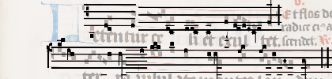
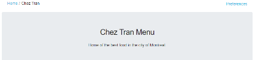
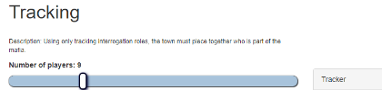
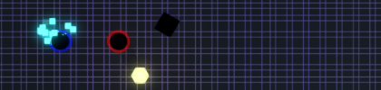
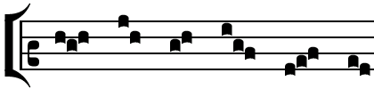

This page contains the programming portfolio of Andrew Tran as it exists on Github.
Link to Github.A web-based music notation editor for MEI-Neume files. I updated the proof of concept prototype originally by G. Burlet & A. Porter, as part of my time at DDMAL. I updated Neon to be used in an optical music recognition workflow.
Link to repository. Developed as part of my senior year design project. A database driven web-app for displaying restaurant menus targeted for blin and low visibility users using screen readers on mobile devices.
Link to repository A Django web application for displaying setups for the game of mafia. Created to learn Django and practice implementation of an MVC architecture.
Link to repository. A Unity3d project created within 3 days. An experimental multiplayer game in which players control two characters at once at try to knock each other off
Link to repository Link to itch.io Implemented Neume functionality into Verovio, a music notation engraving software. Done as part of DDMAL to prepare for the creation of Neon.js 2.0 using verovio as a backend for the incoming MEI 4.0 file format.
Link to repository. {kind=link}
{kind=link}
{kind=link}
{kind=link}
{kind=link}